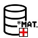
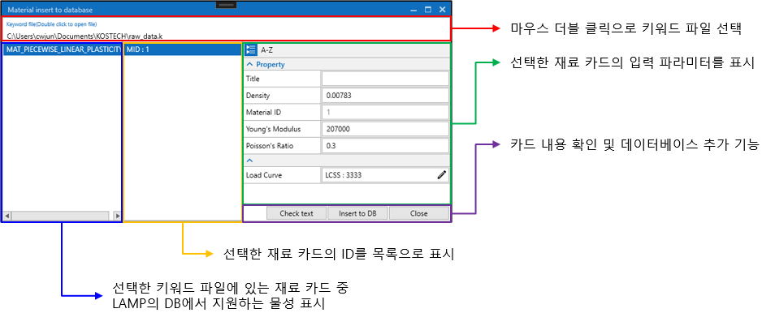
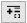

데이터베이스
LAMP에서는 LS-Dyna의 물성 데이터를 저장 및 공유하기 위한 데이터베이스 인터페이스를 제공합니다. 현재 LAMP에서는 MariaDB를 활용하여 개발하고 있기 때문에 데이터베이스 서버에 MariaDB 설치가 필요합니다. 제한된 환경에서 테스트 되고 있기에 다음 환경에서 MariaDB를 활용한 LAMP 사용이 가능합니다. 사용 가능한 환경에 대한 정보는 향후에 테스트 후 추가 될 예정입니다.
OS : Windows 10 or 11
MariaDB Version : 10.5.3
1. MariaDB 설치 및 현대제철 물성 추가
LAMP에서는 Steel계열의 현대제철 물성 데이터를 제공하고 있습니다. 현대제철 물성을 사용하기 위해서는 LAMP Server, MariaDB를 설치 후 LAMP Server에서 제공되는 현대제철 물성 데이터 (hyundaisteel_db.sql)파일을 로드 하여야 합니다. 자세한 내용은 ,
그리고
에서 확인 할 수 있습니다.
2. 데이터베이스에 물성 추가
LS-Dyna 키워드 파일에 정의되어 있는 Material 카드 정보를 데이터베이스에 저장할 수 있는 기능으로 현재 추가할 수 있는 물성 카드는 다음과 같습니다.
*MAT_PIECEWISE_LINEAR_PLASTICITY
1.1 입력 패널 UI
LAMP의 상단 아이콘 메뉴에서  아이콘을 클릭합니다.

1.2 물성 추가하기
키워드 파일 불러오기
Keyword file(Double click to open file) 입력란에서 마우스로 더블 클릭합니다.
LS-Dyna 키워드 파일을 선택합니다.
불러온 키워드 파일에서 지원되는 물성 카드를 찾아 목록으로 표시합니다.
추가할 물성 선택
좌측 첫번째(파란색 테두리)에서 DB에 추가할 물성을 선택합니다.
가운데(노란색 테두리)에 선택한 물성 카드의 ID들이 표시되며 추가할 ID 항목을 선택합니다.
우측 첫번째(녹색 테두리)에서 선택한 물성의 정보를 확인합니다.
Check text 버튼을 통해 선택된 물성 카드를 텍스트로 확인 할 수 있습니다.
데이터베이스에 추가
Insert to DB를 클릭합니다.
아래 그림의 Insert User Data 창이 표시되며 물성 카드에 커브 데이터가 있다면 Curve ID가 표시됩니다.
재료 데이터는 카테고리 항목 아래에 저장되기에 Category를 선택합니다. 로 추가 할 수 있습니다.
물성 이름(Material Name)을 입력하고 Insert를 눌러 DB에 데이터를 저장합니다.

1.3 DB에서 저장된 데이터 확인
데이터베이스에 저장된 데이터 확인 및 출력은 데이터베이스 항목에서 확인할 수 있습니다.